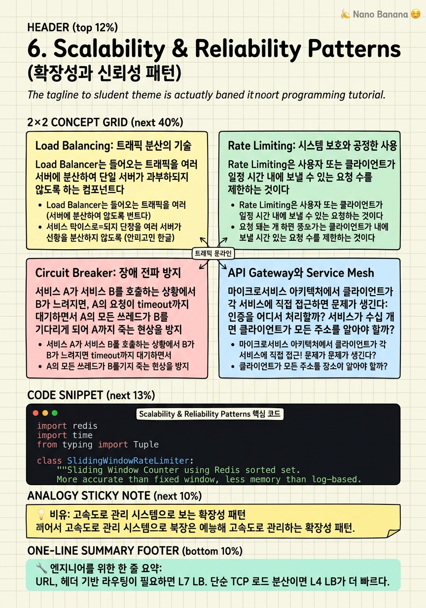

Scalability & Reliability Patterns

🎯 학습 목표
- Load Balancer의 Layer 4 vs Layer 7 차이와 알고리즘(Round Robin, Least Connections, Consistent Hashing)을 설명할 수 있다
- Token Bucket과 Leaky Bucket 레이트 리미터를 구현하고 차이를 설명할 수 있다
- Circuit Breaker의 3가지 상태(Closed, Open, Half-Open)와 동작을 설명할 수 있다
- Service Mesh와 API Gateway의 역할 차이를 설명할 수 있다
- Auto Scaling과 예비 용량(Capacity Planning) 전략을 설명할 수 있다
아무리 잘 설계된 시스템도 프로덕션에서는 예상치 못한 일이 일어난다. 트래픽이 갑자기 10배 폭증하거나, 의존 서비스 중 하나가 느려지거나, 악의적 사용자가 API를 남용하거나. 이 챕터에서는 이런 상황에서 시스템이 버텨내는 신뢰성 패턴(Reliability Patterns)을 다룬다.
확장성(Scalability)은 트래픽 증가에 따라 성능을 선형적으로 유지하는 능력이고, 신뢰성(Reliability)은 일부 컴포넌트가 실패해도 시스템이 올바르게 동작하는 능력이다. 두 가지 모두 빅테크 시스템에서 non-negotiable이다.
이 챕터의 패턴들은 독립적으로 쓰이기도 하지만, 실제로는 여러 패턴을 계층적으로 조합하여 사용한다. API Gateway에서 Rate Limiting, 서비스 간 통신에 Circuit Breaker, 서버 풀에 Load Balancer, 자동화된 Scale-Out을 모두 함께 쓰는 것이 프로덕션 아키텍처다.
핵심 내용
Load Balancing: 트래픽 분산의 기술
Load Balancer는 들어오는 트래픽을 여러 서버에 분산하여 단일 서버가 과부하되지 않도록 하는 컴포넌트다.
Layer 4 vs Layer 7 Load Balancer:
- L4 (Transport Layer) — IP/Port 기준으로 라우팅. 패킷 내용을 보지 않음. 매우 빠름. AWS NLB (Network Load Balancer).
- L7 (Application Layer) — HTTP 헤더, URL, Cookie 기준으로 라우팅. 내용 기반 라우팅 가능. 약간 느리지만 훨씬 유연. AWS ALB (Application Load Balancer).
로드 밸런싱 알고리즘:
| 알고리즘 | 동작 | 적합한 경우 | |---|---|---| | Round Robin | 순서대로 순환 | 요청 처리 시간이 균일할 때 | | Weighted Round Robin | 가중치 비례 | 서버 사양이 다를 때 | | Least Connections | 현재 연결 수 가장 적은 서버 | 처리 시간 편차가 클 때 | | IP Hash | 같은 IP → 항상 같은 서버 | Session Affinity(Sticky Session) 필요 시 | | Random | 무작위 선택 | 부하가 균일하고 단순성 원할 때 |
Health Check:
Load Balancer는 주기적으로 각 서버에 health check 요청을 보내 정상 서버만 트래픽을 받도록 한다. HTTP /health 엔드포인트에 200 응답이 오는 서버만 풀에 유지.
Rate Limiting: 시스템 보호와 공정한 사용
Rate Limiting은 사용자 또는 클라이언트가 일정 시간 내에 보낼 수 있는 요청 수를 제한하는 것이다. 목적은 세 가지다: DDoS 방어, API 남용 방지, 공정한 자원 분배.
Token Bucket 알고리즘:
버킷에 토큰이 일정 속도로 채워진다. 요청 시 토큰을 소비. 버킷이 비면 요청 거절.
- 토큰 보충 속도 = 허용 QPS (예: 초당 10개) - 버킷 용량 = 버스트 허용량 (예: 최대 20개) - 특징: 버스트 트래픽 허용. 평균 속도를 제한.
Leaky Bucket 알고리즘:
요청이 큐에 쌓이고 일정 속도로 처리된다. 큐가 가득 차면 새 요청 거절.
- 특징: 정확히 일정한 처리 속도 보장. 버스트 없음.
- 사용: 처리 속도 평탄화가 중요한 경우 (예: 네트워크 패킷 처리)
Sliding Window Log:
요청 타임스탬프를 log에 저장, 현재 시간 기준 윈도우 내 요청 수 계산. 가장 정확하지만 메모리 사용량 많음.
분산 Rate Limiting:
여러 서버에서 같은 사용자의 요청을 제한하려면 중앙 저장소 필요. Redis의 INCR + EXPIRE 또는 Sliding Window Counter로 구현. Redis는 단일 스레드이므로 원자적 연산이 가능하다.
Rate Limit Response:
- HTTP 429 Too Many Requests
- Retry-After: 30 헤더로 언제 재시도할지 알림
- X-RateLimit-Limit: 100, X-RateLimit-Remaining: 0 헤더
Circuit Breaker: 장애 전파 방지
서비스 A가 서비스 B를 호출하는 상황에서 B가 느려지면, A의 요청이 timeout까지 대기하면서 A의 모든 쓰레드가 B를 기다리는 데 소비된다. 이것이 Cascading Failure (연쇄 장애)다.
Circuit Breaker는 전기 회로 차단기처럼, 문제가 생긴 downstream 서비스로의 호출을 빠르게 차단(fast-fail)하여 연쇄 장애를 방지한다.
Circuit Breaker의 3가지 상태:
Closed (정상) — 모든 요청을 통과시킴. 실패율(error rate)을 추적. 실패율이 임계값(예: 50%)을 초과하면 Open으로 전환.
Open (차단) — 모든 요청을 즉시 실패로 반환 (fast-fail). downstream에 요청 없음. 지정 시간(예: 30초) 후 Half-Open으로 전환.
Half-Open (탐색) — 소수 요청만 통과. 성공하면 Closed로, 실패하면 다시 Open으로 전환.
Hystrix / Resilience4j — Netflix가 만든 Circuit Breaker 구현체 (Hystrix는 deprecated, Resilience4j가 후계자). Spring Boot 생태계에서 널리 사용.
Circuit Breaker + Fallback:
Open 상태에서 fast-fail 할 때 fallback을 제공할 수 있다. 추천 서비스가 다운됐을 때 캐시된 추천 목록을 반환하거나, 기본 추천 목록을 보여주는 것이 fallback의 예다.
API Gateway와 Service Mesh
마이크로서비스 아키텍처에서 클라이언트가 각 서비스에 직접 접근하면 문제가 생긴다: 인증을 어디서 처리할까? 서비스가 수십 개면 클라이언트는 수십 개의 엔드포인트를 알아야 한다. Rate Limiting을 각 서비스에서 따로 구현해야 하나?
API Gateway는 클라이언트의 모든 요청이 통과하는 단일 진입점이다.
역할:
- 인증/인가 (JWT 검증, API Key 확인)
- Rate Limiting
- SSL Termination
- Request Routing — /api/users → User Service, /api/orders → Order Service
- Response Aggregation — 여러 서비스 응답을 합쳐 클라이언트에 반환
- Request/Response 변환
AWS API Gateway, Kong, Nginx, Envoy가 대표적인 구현체다.
Service Mesh (예: Istio, Linkerd)
API Gateway가 North-South 트래픽(외부 → 내부)을 담당한다면, Service Mesh는 East-West 트래픽(서비스 → 서비스)을 담당한다. 각 서비스 옆에 sidecar proxy (예: Envoy)를 붙여 서비스 간 모든 통신을 중재한다.
역할: - mTLS로 서비스 간 암호화 - Circuit Breaker, Retry, Timeout 정책 적용 - 트래픽 분할 (Canary Deploy — 1%만 새 버전으로) - 분산 추적(Distributed Tracing) — 요청이 어떤 서비스를 거쳤는지 추적
Service Mesh는 강력하지만 운영 복잡도가 크다. 수십 개 이상의 서비스가 있을 때 유효하다.
Auto Scaling과 Capacity Planning
Horizontal Scaling (Scale-Out) 은 서버를 더 추가하는 것, Vertical Scaling (Scale-Up) 은 서버를 더 강력하게 업그레이드하는 것이다.
| 항목 | Horizontal | Vertical | |---|---|---| | 방법 | 서버 추가 | CPU/RAM 업그레이드 | | 한계 | 이론적 무제한 | 단일 서버 최대 사양 | | 비용 | 점진적 증가 | 비선형 증가 (고급 서버 매우 비쌈) | | 중단 | 무중단 가능 | 재시작 필요 | | 복잡도 | 분산 시스템 복잡도 | 단순 |
빅테크는 Horizontal Scaling이 기본이다. 단, DB는 Vertical Scaling도 병행한다.
Auto Scaling:
- Reactive Scaling — CPU > 70% 지속 5분 → 인스턴스 추가. AWS Auto Scaling Group의 기본 방식.
- Predictive Scaling — ML로 트래픽 패턴을 학습하여 선제적으로 스케일. 점심 시간 트래픽은 항상 증가하므로 11:30부터 미리 스케일아웃.
Capacity Planning:
실제 프로덕션에서는 트래픽 증가 예측에 기반하여 인프라를 미리 준비한다. 핵심 지표:
- p99 Latency — 99번째 백분위 요청 처리 시간. 평균보다 tail latency가 중요하다.
- Error Rate — 5xx 비율 0.1% 이하 유지 - CPU Utilization — 정상 운영 시 70% 이하. 70% 이상에서 스케일아웃.
- Queue Depth — 메시지 큐의 Consumer Lag이 증가하면 Consumer 수 늘리기
💡 비유로 이해하기
대규모 시스템의 확장성 패턴은 고속도로 관리와 같다. Load Balancer는 톨게이트 직전의 교통 안내 표지판이다. 1번 차선이 막히면 2, 3번으로 유도한다. Rate Limiting은 교통량 통제 시스템이다. 차량이 너무 많으면 진입을 제한한다. 그렇지 않으면 모두가 멈춘다.
Circuit Breaker는 사고 발생 구간의 우회도로 안내다. 특정 구간(downstream 서비스)이 막히면 즉시 우회로를 안내하고, 구간이 뚫리면 다시 원래 길로 돌아온다. 무작정 기다리다 전체 교통이 마비되는 것을 방지한다.
Auto Scaling은 러시아워 때 임시 차선을 추가하는 것이다. 트래픽이 늘면 차선을 추가(인스턴스 추가)하고, 심야에는 줄인다(인스턴스 종료). 비용을 절약하면서도 피크 타임에 성능을 유지한다.
💻 코드 예시
Redis를 이용한 Sliding Window Rate Limiter를 구현한다. 이것은 Twitter, GitHub, Stripe 등이 실제로 사용하는 방식에 가까운 구현이다.
import redis
import time
from typing import Tuple
class SlidingWindowRateLimiter:
"""
Sliding Window Counter using Redis sorted set.
More accurate than fixed window, less memory than log-based.
"""
def __init__(self, redis_client: redis.Redis, limit: int, window_sec: int):
self.r = redis_client
self.limit = limit # Max requests
self.window = window_sec # Window size in seconds
def is_allowed(self, identifier: str) -> Tuple[bool, int]:
now = time.time()
window_start = now - self.window
key = f"rate_limit:{identifier}"
pipe = self.r.pipeline()
# Remove entries older than the window
pipe.zremrangebyscore(key, '-inf', window_start)
# Add current request with timestamp as score
pipe.zadd(key, {str(now): now})
# Count requests in the current window
pipe.zcard(key)
# Set key expiry to avoid memory leak
pipe.expire(key, self.window + 1)
_, _, count, _ = pipe.execute()
remaining = max(0, self.limit - count)
allowed = count <= self.limit
return allowed, remaining
# Token Bucket implementation for comparison
class TokenBucketRateLimiter:
def __init__(self, redis_client: redis.Redis, capacity: int, refill_rate: float):
self.r = redis_client
self.capacity = capacity # Max burst size
self.refill_rate = refill_rate # Tokens per second
def is_allowed(self, identifier: str) -> bool:
key = f"token_bucket:{identifier}"
now = time.time()
data = self.r.hgetall(key)
if data:
tokens = float(data[b'tokens'])
last_refill = float(data[b'last_refill'])
# Refill tokens based on elapsed time
elapsed = now - last_refill
tokens = min(self.capacity, tokens + elapsed * self.refill_rate)
else:
tokens = self.capacity # First request: full bucket
if tokens >= 1:
self.r.hset(key, mapping={'tokens': tokens - 1, 'last_refill': now})
self.r.expire(key, int(self.capacity / self.refill_rate) + 1)
return True
return False
# Usage
r = redis.Redis()
limiter = SlidingWindowRateLimiter(r, limit=100, window_sec=60)
allowed, remaining = limiter.is_allowed("user:1001")
if not allowed:
print("429 Too Many Requests")
else:
print(f"Request allowed. {remaining} remaining in this window.")Sliding Window Counter는 Redis Sorted Set을 사용한다. score가 timestamp이므로 window_start보다 오래된 요청을 zremrangebyscore로 자동 정리한다. Pipeline을 써서 4개 명령을 원자적으로 실행하여 race condition을 방지한다. 이 구현은 Fixed Window (정각에 limit이 초기화되는 문제)의 단점 없이 더 공정한 rate limiting을 제공한다.
🏭 현업에서의 평가
✅ 시니어가 보는 것
- 단일 장애점(SPOF)을 식별하고 제거하는 설계를 하는가
- Rate Limiting 구현 방법과 분산 환경에서의 한계를 아는가
- Circuit Breaker가 없을 때 어떤 장애가 발생하는지 설명할 수 있는가
- Auto Scaling의 한계와 워밍 시간 문제를 인지하는가
⚠️ 레드 플래그
- Load Balancer가 없는 단일 서버 설계
- Rate Limiting 없는 Public API 설계
- Circuit Breaker 없는 마이크로서비스 간 동기 호출
- "서버를 더 늘리면 됩니다"만 말하고 구체적 스케일링 전략 없음
🎤 예상 인터뷰 질문
- Twitter API에 Rate Limiting을 구현한다면 어떤 알고리즘과 저장소를 쓰겠어?
- Circuit Breaker의 Half-Open 상태가 왜 필요한지 설명해봐.
- L4 Load Balancer와 L7 Load Balancer의 차이와 각각 언제 쓰는지 말해봐.
✨ 핵심 요약
L7 LB가 더 유연
URL, 헤더 기반 라우팅이 필요하면 L7 LB. 단순 TCP 로드 분산이면 L4 LB가 더 빠르다.
Token Bucket = 버스트 허용
Token Bucket은 평균 속도를 제한하면서 버스트를 허용한다. API Rate Limiting의 표준 방식.
Circuit Breaker = Fast Fail
Downstream이 느릴 때 빠르게 실패하여 cascading failure를 방지한다. Fallback을 함께 설계하라.
API Gateway = 외부 진입점
인증, Rate Limiting, SSL, 라우팅을 API Gateway에서 일괄 처리한다. 각 서비스가 중복 구현하지 않아도 된다.
Service Mesh = 내부 통신
서비스 간 통신의 신뢰성, 보안, 관찰성은 Service Mesh sidecar가 담당한다. 애플리케이션 코드 수정 불필요.
p99가 평균보다 중요
사용자 경험은 평균이 아닌 tail latency(p99, p999)에 좌우된다. 모니터링 지표에 p99를 포함하라.
Scale Out이 기본
수평 확장을 염두에 두고 설계하라. 상태(state)를 서버에 두지 않는 stateless 서버가 scale-out의 전제 조건이다.
Health Check는 필수
Load Balancer의 health check로 죽은 서버를 자동으로 제거한다. /health 엔드포인트를 항상 구현하라.